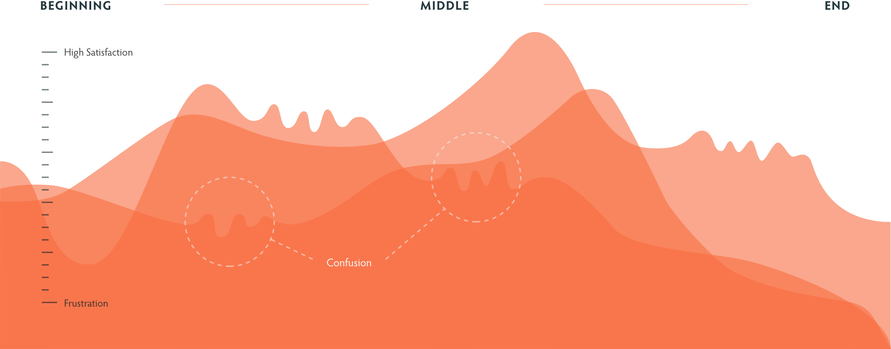
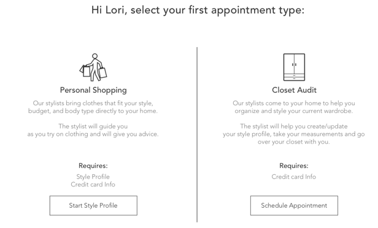
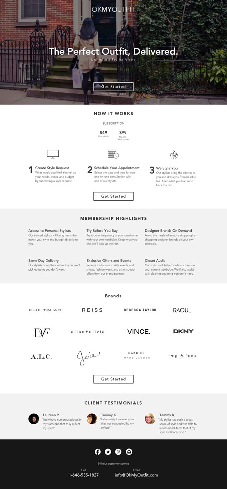

Chuck Flores
User Experience Designer
OkMyOutfit
Problem
OkMyOutfit is an on-demand personal styling service offering unlimited stylist appointments for a monthly fee. Their current on-boarding process was very long taking users on average 10 mins to complete. In addition their homepage didn't clear describe the service to visitors.
Project Details:
- 3 Team Members
- Timeline: 3 Weeks
User Journey
We tested the current sign up process with potential users to discover pain points throughout the style profile. While testing we periodically asked users how they felt. We created user journeys to visualize the results from our usability test to the client. Below is one of our user journey.
"Shouldn’t a stylist meet me to take my measurements?"
Yes! Redesigning the Initial Sign Up
Through user interviews and tests my team discovered that users wanted the stylist to take their measurements at the first visit. This lead to giving the user the option of completing the sign up form or requesting in-home measurements and style assessment.
Landing Page Redesign
On-Boarding Process
Our redesign of the style profile questionaire consisted of and addition of a top progress bar, stronger copy, secondary copy for clarification, and improved overall visual design.

POSITIVE & ENGAGING QUESTIONS
We redesigned the style profile questions to be clear in their language and promote positive body image. Additionally we supplemented the questions with a secondary copy. This clarified the question and told the user why the information is needed.
Original